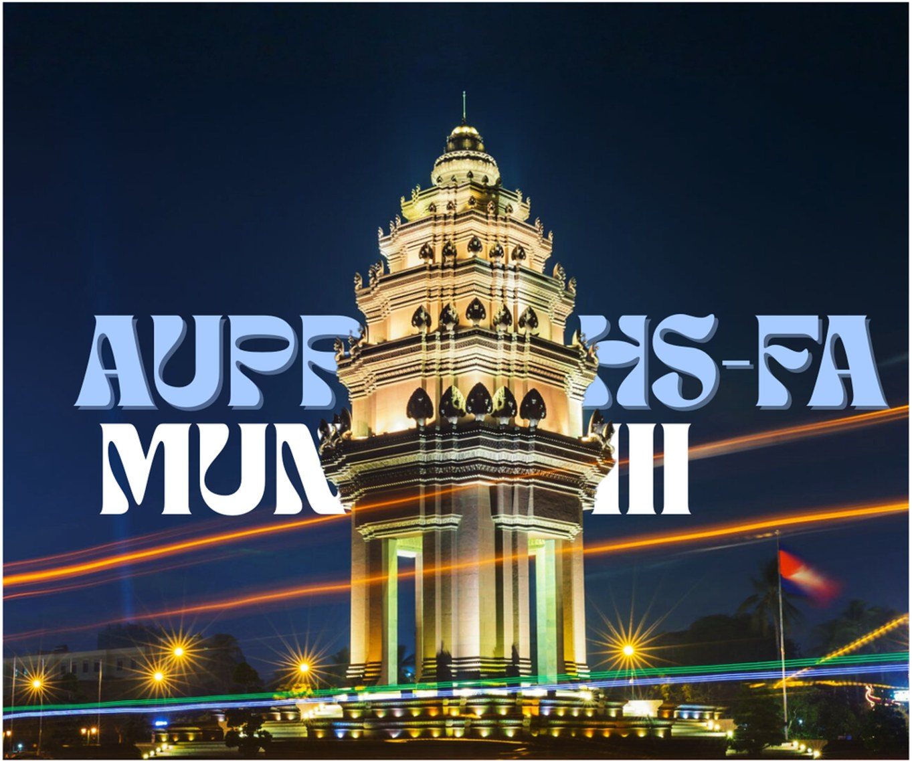

AUPPHS-FA MUN III — Restoring Global Peace Beyond Political Borders
“Restoring Global Peace Beyond Political Borders”
United for a Better Change
From the Secretary General
Dear distinguished delegates, honorable chairs, esteemed directors, and respected guests,
I am Kanikar Ly, and it is my greatest honor and privilege to welcome you to the third edition of the AUPPHS-FA Model United Nations.
This year’s theme, “Restoring Global Peace Beyond Political Borders,” reminds us that peace extends beyond geography and requires global cooperation in an increasingly divided world.
As Secretary-General, I am excited to witness the engaging debates and meaningful discussions that will take place throughout this conference. I encourage every delegate to embrace the spirit of diplomacy and make the most of this unforgettable experience.
On behalf of the Executive Committee, I sincerely thank all delegates, chairs, and directors for your dedication and participation. We are truly honored to have you with us.
Warmest regards,
Ly Kanikar
Secretary General, AUPPHS-FA MUN III

AUPPHS-FA MUN III Secretariat
Director

Secretary General & Deputy Secretary General
Information Technology, Logistics, Media & Design
Opening ceremony · 23 October 2026
Delegate arrivals from 2:30 PM · Full schedule
American University of Phnom Penh
When
October 23–25, 2026
Where
#278H, Street 201R, Kroalkor Village, Sangkat Kilometer 6, Khan Russey Keo, Phnom Penh, Cambodia
About
AUPPHS-FA MUN III is the third edition of the AUPP High School – Foxcroft Academy Model United Nations, hosted on the campus of the American University of Phnom Penh. Over three days, delegates step into the roles of global leaders across 10 committees, debate pressing international crises, and negotiate resolutions under the theme Restoring Global Peace Beyond Political Borders.
Questions? We’d love to hear from you.
Follow @aupphsfa.mun on Instagram for announcements, or reach a committee’s chair team directly from its page.